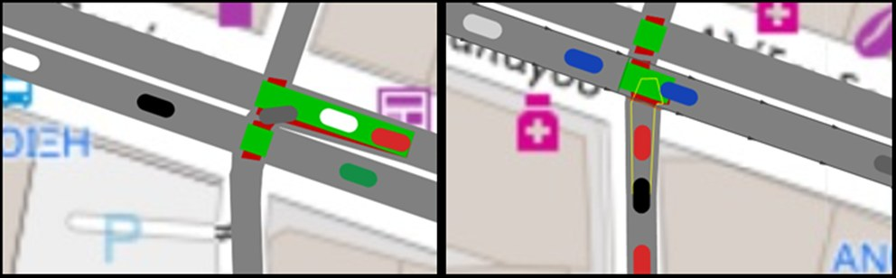

Description
Autonomous vehicles will share city streets with human drivers for years, so they need to anticipate how people negotiate right of way. This thesis modelled those interactions from real driving data and tested the model in traffic simulation.
- Field observation: experienced drivers drove a predefined urban route wearing Tobii eye-tracking glasses.
- Data analysis: about 800 minutes of gaze data, scene video and the drivers' retrospective commentary were analysed.
- Modelling: an interaction model based on game theory, with a utility function estimating each driver's cost of yielding, implemented in MATLAB.
- Simulation: urban traffic simulated in VISSIM coupled with MATLAB to test the model's credibility.
- Validation: metrics extracted from the simulation were compared with the field-study results.

Awards
- Thesis grade: 10/10.
- Cyprus Ministry of Education first prize for best student project.
- NTUA second prize for the school's most innovative project (2018).
Technologies Used
- MATLAB
- VISSIM / SUMO traffic simulation
- Tobii eye-tracking glasses and software
- Game theory / utility modelling